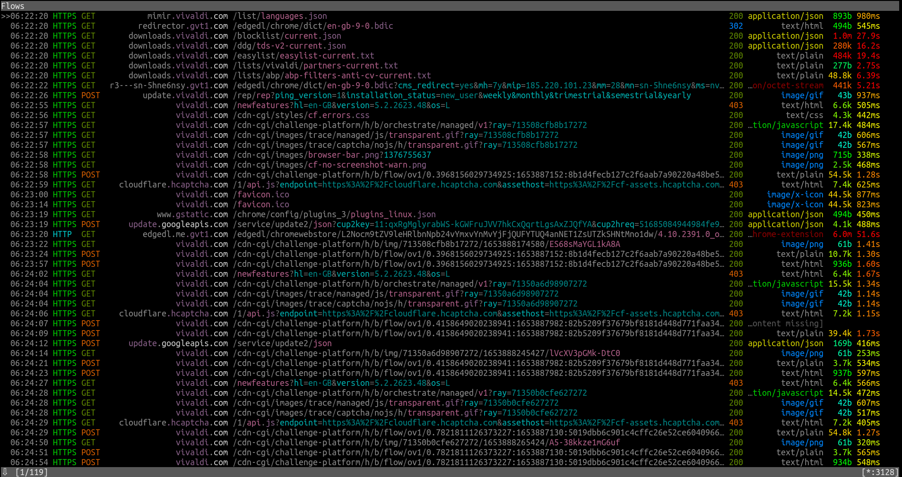

Vivaldi
Vivaldi is a feature-full, customizable web browser made by some of Opera's old developers (since they were dissatisfied with the direction Opera was heading). Just like modern Opera, it is based on Chromium.
Version tested: 5.2.2623.48
Spyware Level: High
Vivaldi makes about 119 requests on startup, and continues to make unsolicited connections after. Anti-privacy Bing is the default search engine.
Even if you disable everything under "Google Services" and "Google Extensions" under "Privacy" in settings, it will still make automatic connections to Google. Also makes connections after first start up to mirmir.vivaldi.com and downloads.vivaldi.com.
Vivaldi's web pages are Cloudflared
You will be blocked if using Tor, and be connected to hcaptcha.cloudflare.org. You can disable this by simply changing the homepage.
Vivaldi Assigns you a unique ID
From the Privacy Policy: "When you install Vivaldi browser (“Vivaldi”), each installation profile is assigned a unique user ID that is stored on your computer. Vivaldi will send a message using HTTPS directly to our servers located in Iceland every 24 hours containing this ID, version, cpu architecture, screen resolution and time since last message. We anonymize the IP address of Vivaldi users by removing the last octet of the IP address from your Vivaldi client then we store the resolved approximate location after using a local geoip lookup. The purpose of this collection is to determine the total number of active users and their geographical distribution".[1]
Cannot be built from source code
"However, it is only our Chromium work that is found on https://vivaldi.com/source. If you were to build it and run it, nothing will display as the HTML/CSS/JS UI is missing. This UI is only available as part of our end user packages, which is covered by the EULA (in which we also bundle with a compiled version of our modified Chromium)."[2]